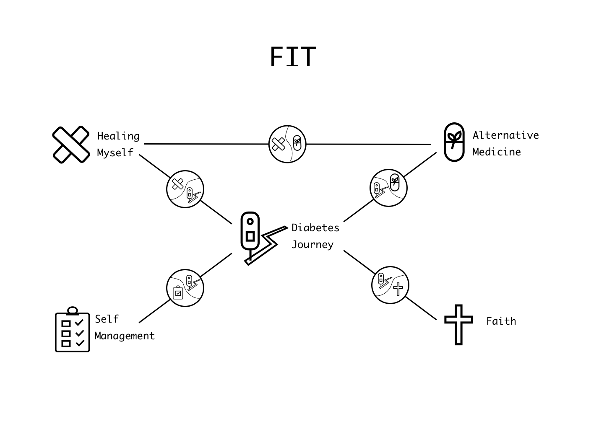
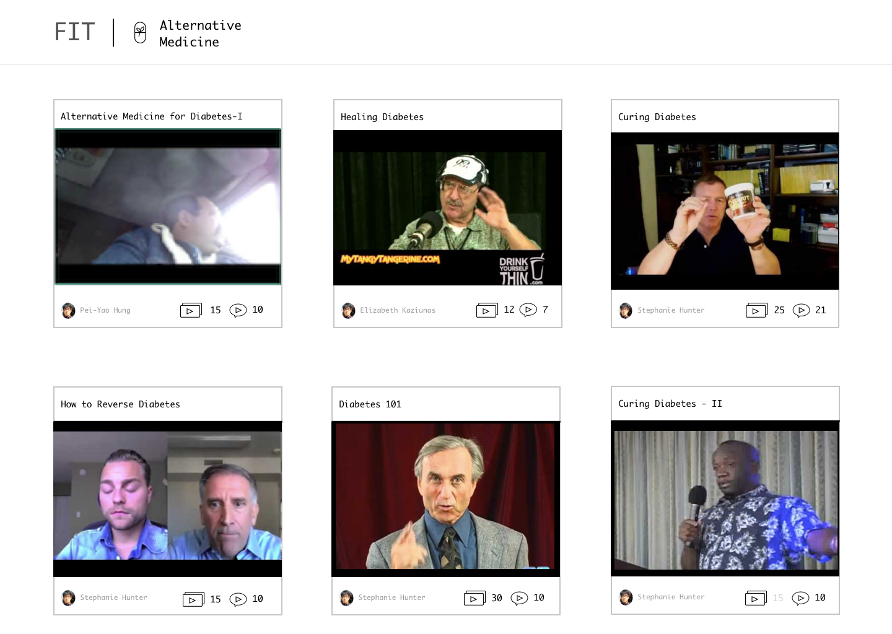
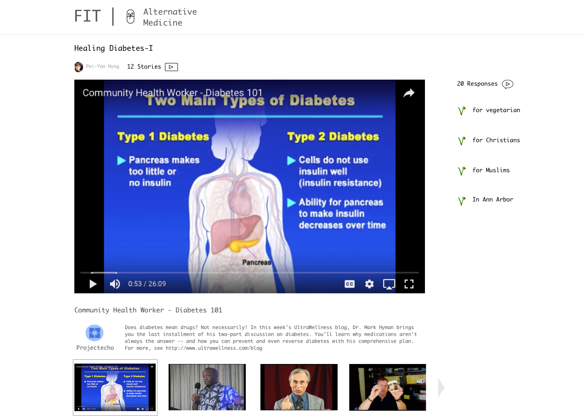

Flint Information Translation (FIT)
This Project is still in progress.
Diabetes Management in Flint
People in Flint
In previous studies of Flint residents with diabetes and other diseases, researchers found Flint residents have to localize diabetes management based on their living situation. People found practical ways to practice medical care in the face of poverty, violence, and limited healthcare services. They also integrated information from community members and their faith (Kaziunas, Ackerman, & Veinot, 2013).Fit
I have been working with Dr. Mark Ackerman and Pei-Yao Hung, a PhD candidate on developing the prototype of FIT, an application for people from Flint, MI to manage diabetes. FIT presents a post-modern idea on chronic disease management based on social contexts. FIT is a video-based application which provides personalized plans for managing diabetes. My role is to design the new iteration of FIT.
Persona
Esther
- is in her mid-40s, has had diabetes for a long time
- lives in a neighborhood with high crime rates
- attends a local church
- lacks access to quality healthcare, distrusts institutionalized medicine
- has limited education, is not tech-savvy
FIT
Youtube Videos
The internet offers abundant information on diabetes management, but mostly in text formats. Reading articles full of jargon and dense knowledge. Therefore, we chose to use Youtube videos as the media to provide information, because watching videos is easier than reading and videos provide concrete images of the methods for viewers to follow.Viewpoints
Based on the data from diabetes forums and in-person interviews from previous studies, we identified 5 viewpoints, major ways people use for diabetes management: Diabetes Journey, Healing Myself, Self Management, Alternative Medicine, and Faith (Christianity). We compiled a list of videos labeled by the five viewpoints; some videos may cover the topic under two viewpoints.Stories and Responses
Each viewpoint has many video collections complied by users. Each video from a video collection is called a Story. Stories are youtubers telling their own way to handle diabetes. FIT users are able to record video Responses for each Story and tell fellow FIT users about their experience with the methods provided in the Story.
Design

Icons
I designed a set of icons for viewpoints and navgiation. Icons are used to help translate the meaning of each viewpoint and improve readability. For example, I used a cross icon for faith to clarify that faith refers to Christianity.User Interface Design


